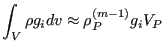

Next: Rhie-Chow interpolation Up: Conservation of momentum (compressible Previous: Pressure term Contents
The term with volume forces is modeled by:
|  | (578) |
and ends up on the right hand side.
After solving the resulting system of equations leading to
 the solution
the solution
 is
calculated by blending
is
calculated by blending
 (20 %) with
(20 %) with
 (80 %). This is called underrelaxation
and is needed to ensure stability in the SIMPLE scheme (the specifics of this
scheme will be discussed when treating the conservation of
mass). For the SIMPLE scheme underrelaxation is needed for all conservation
equations: for the conservation of momentum, temperature,
(80 %). This is called underrelaxation
and is needed to ensure stability in the SIMPLE scheme (the specifics of this
scheme will be discussed when treating the conservation of
mass). For the SIMPLE scheme underrelaxation is needed for all conservation
equations: for the conservation of momentum, temperature,  and
and  in
the above blend, for the conservation of mass using the inverse blend, i.e. 20
% of the new solution combined with 80 % of the old solution. For the
SIMPLEC scheme (also discussed further along the line) no underrelaxation is needed.
in
the above blend, for the conservation of mass using the inverse blend, i.e. 20
% of the new solution combined with 80 % of the old solution. For the
SIMPLEC scheme (also discussed further along the line) no underrelaxation is needed.